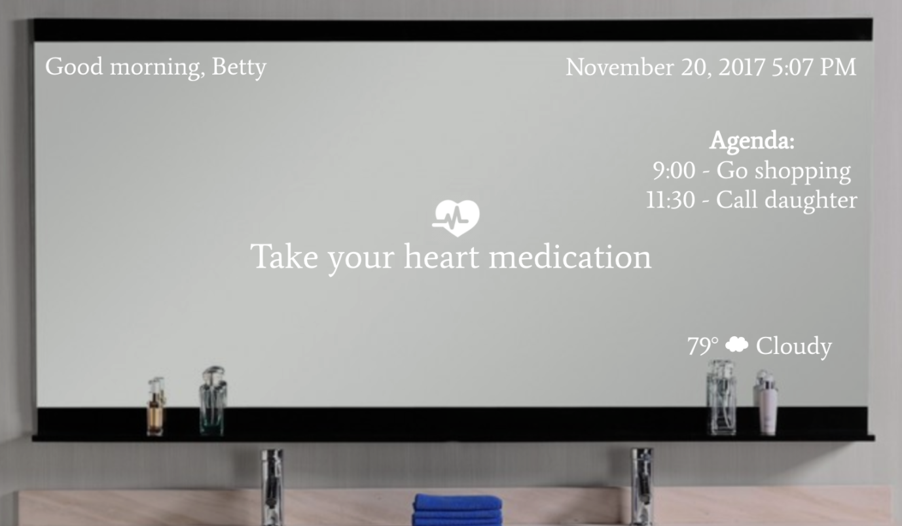
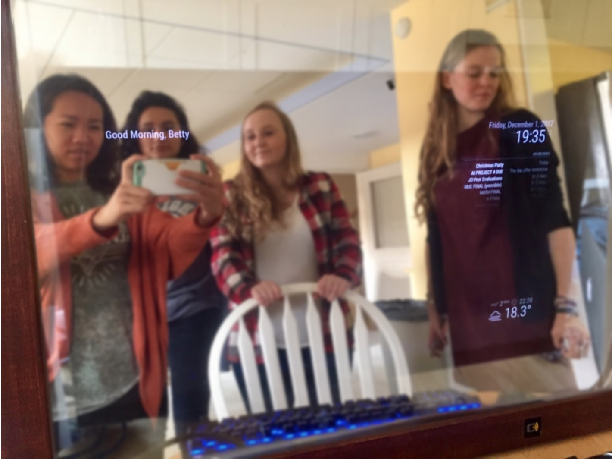

Smart Mirror
User Experience Research
A smart mirror integrated into the Aware Home at Georgia Tech to assist older adults or people with disabilities in their daily life. Features include weather and time alerts, as well as important reminders like daily medication alerts.
Process
Initial Prototype
User Research
One of the main challeges of this project was conducting research with our target users who are adults over the age of 40. It was difficult to gather data on an older population, but we were able to assess the users' need through an online survey. We asked participants questions regarding the features they would like to see in a "smart mirror" and the methods of interacting with it (Eg. voice commands, touch screen, text and image).
We recieved responses from over 25 stakeholders. Surprisingly, a large majority of the participants only wanted to interact with the mirror via image and text displays. We realized that this was because older generations tend to prefer simpler interfaces. For that reason, we went with a minimal design, with large, high-contrast texts.
Below were the most requested features for the "smart mirror":
- Date & time
- Weather
- Alarms, reminders, or alerts
- Daily schedule
- Custom message
Final Prototype
The final prototype was created with a Raspberry Pi mounted behind a two-way mirror and desktop monitor. We were able to implement a majority of the requested features using the open-sourced Magic Mirror package for the Raspberry Pi.
A custom greeting message appears on the top left. The top right corner of the mirror shows the date and time, as well as a daily schedule, which connects to Google Calendar. The weather at the bottom right is pulled from OpenWeatherMap.org.